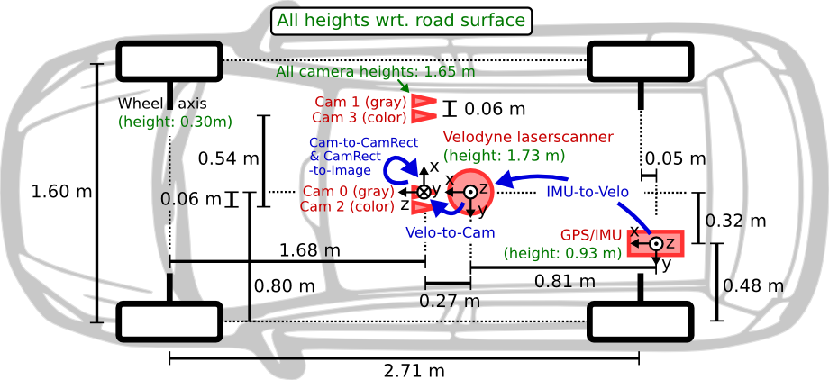

点云与图像做映射¶
针孔相机模型¶
简单来说，相机的成像过程就是将一个三维世界中的点映射到二维平面中，具体可由下图表示：

设O-x-y-z为相机坐标系，习惯上让z轴指向相机前方，x向右，y向下，O为摄像机的光心，现实世界中，空间上的一点P，经过小孔O投影之后，落到平面O'-x'-y'上，成像点为P'，假设焦距为f（即成像平面到小孔的距离），根据三角形关系可得（翻转了一下）：
像素坐标与成像平面之间相差一个缩放和一个原点的平移，其中缩放是由于不同相机设备分辨率不同，因此成像平面的坐标尺度不同，并且成像平面位于图像的左上角，所以还要再添加一个偏移项。假设像素坐标在u轴上缩放了\alpha倍，在v轴上缩放了\beta倍，原点平移了[c_x,c_y]^T，那么P'的坐标与像素坐标[u,v]^T之间的关系可以表示为：
上述公式中，P是物体在相机坐标系下的坐标，但实际上，物体的三维坐标往往不能直接通过相机得到，需要通过其他的设备来捕获，（例如利用激光雷达来获取点云坐标），假设利用其他设备捕获到的三维坐标记为P_w，之后利用相机的当前位姿变换得到相机下的坐标，假设R和t分别是相机位姿的旋转矩阵和平移向量，那么有：
以上参考《视觉SLAM十四讲》，高翔、张涛，第5讲。
KITTI¶
数据集下载地址：https://www.cvlibs.net/datasets/kitti/index.php

标定文件
- P0、P1、P2、P3：均代表对应的相机内参矩阵，其中序号0-3分别代表左边灰度相机、右边灰度相机、左边彩色相机、右边彩色相机，尺寸为3\times4，前3\times3的矩阵表示K阵，最后那列3\times1的矩阵表示T阵，数据格式为：
fx 0 cx Tx
0 fy cy Ty
0 0 1 Tz
其中fx和fy分别表示相机在x和y方向上的焦距，cx和cy分别表示相机光心（主点）在图像平面上的坐标，而Tx、Ty和Tz分别表示相机光心（主点）在相机坐标系下的平移向量，这个平移向量描述了相机光心相对于相机坐标系原点的位置，在计算坐标点由相机系到图像系的投影时用到，执行KP+T运算（具体可见源码实现部分）。
-
R0_rect：为0号相机的修正矩阵，尺寸为3\times3，目的是为了使4个相机成像达到共面的效果，保证4个相机光心在同一个xoy平面上；
-
Tr_velo_to_cam：为外参矩阵，尺寸为3\times4，用于将雷达系下的坐标转为相机系下的坐标，包含旋转矩阵R和平移向量t，即[R,t]_{(3,4)}，数据格式为：
R11 R12 R13 Tx
R21 R22 R23 Ty
R31 R32 R33 Tz
其中R_{(3,3)}表示旋转矩阵，而Tx、Ty和Tz分别表示相机在真实世界坐标系下的平移向量，在计算坐标点由雷达系到相机系的投影时用到，执行RP+T运算。
将激光雷达坐标系中的点x投影到彩色图像y中的步骤：
代码实现¶
参考链接：https://github.com/ZhengXinyue/bilibili_project
效果图：
import sys
import cv2
import numpy as np
import matplotlib.pyplot as plt
import pyqtgraph.opengl as gl
from PyQt5.QtWidgets import QApplication
cmap = plt.cm.jet
def read_bin(bin_path, intensity=False):
"""
读取kitti bin格式文件点云
:param bin_path: 点云路径
:param intensity: 是否要强度
:return: numpy.ndarray `N x 3` or `N x 4`
"""
lidar_points = np.fromfile(bin_path, dtype=np.float32).reshape((-1, 4))
if not intensity:
lidar_points = lidar_points[:, :3]
return lidar_points
def read_calib(calib_path):
"""
读取kitti数据集标定文件
下载的彩色图像是左边相机的图像, 所以要用P2
extrinsic = np.matmul(R0, lidar2camera)
intrinsic = P2
P中包含第i个相机到0号摄像头的距离偏移(x方向)
extrinsic变换后的点云是投影到编号为0的相机(参考相机)坐标系中并修正后的点
intrinsic(P2)变换后可以投影到左边相机图像上
P0, P1, P2, P3分别代表左边灰度相机，右边灰度相机，左边彩色相机，右边彩色相机
:return: P0-P3 numpy.ndarray `3 x 4`
R0 numpy.ndarray `4 x 4`
lidar2camera numpy.ndarray `4 x 4`
imu2lidar numpy.ndarray `4 x 4`
>>> P0, P1, P2, P3, R0, lidar2camera_m, imu2lidar_m = read_calib(calib_path)
>>> extrinsic_m = np.matmul(R0, lidar2camera_m)
>>> intrinsic_m = P2
"""
with open(calib_path, 'r') as f:
raw = f.readlines()
# 读取四个相机内参矩阵，0-3依次表示:左边灰度相机、右边灰度相机、左边彩色相机、右边彩色相机
P0 = np.array(list(map(float, raw[0].split()[1:]))).reshape((3, 4))
P1 = np.array(list(map(float, raw[1].split()[1:]))).reshape((3, 4))
P2 = np.array(list(map(float, raw[2].split()[1:]))).reshape((3, 4))
P3 = np.array(list(map(float, raw[3].split()[1:]))).reshape((3, 4))
R0 = np.array(list(map(float, raw[4].split()[1:]))).reshape((3, 3))
R0 = np.hstack((R0, np.array([[0], [0], [0]])))
R0 = np.vstack((R0, np.array([0, 0, 0, 1])))
# 雷达到相机的转换矩阵
lidar2camera_m = np.array(list(map(float, raw[5].split()[1:]))).reshape((3, 4))
lidar2camera_m = np.vstack((lidar2camera_m, np.array([0, 0, 0, 1])))
imu2lidar_m = np.array(list(map(float, raw[6].split()[1:]))).reshape((3, 4))
imu2lidar_m = np.vstack((imu2lidar_m, np.array([0, 0, 0, 1])))
return P0, P1, P2, P3, R0, lidar2camera_m, imu2lidar_m
def vis_pointcloud(points, colors=None):
"""
渲染显示雷达点云
:param points: numpy.ndarray `N x 3`
:param colors: numpy.ndarray `N x 3` (0, 255)
:return:
"""
app = QApplication(sys.argv)
if colors is not None:
colors = colors / 255
colors = np.hstack((colors, np.ones(shape=(colors.shape[0], 1))))
else:
colors = (1, 1, 1, 1)
og_widget = gl.GLViewWidget()
point_size = np.zeros(points.shape[0], dtype=np.float16) + 0.1
points_item1 = gl.GLScatterPlotItem(pos=points, size=point_size, color=colors, pxMode=False)
og_widget.addItem(points_item1)
# 作为对比
# points_item2 = gl.GLScatterPlotItem(pos=points, size=point_size, color=(1, 1, 1, 1), pxMode=False)
# points_item2.translate(0, 0, 20)
# og_widget.addItem(points_item2)
og_widget.show()
sys.exit(app.exec_())
def image2camera(point_in_image, intrinsic):
"""
图像系到相机系反投影
:param point_in_image: numpy.ndarray `N x 3` (u, v, z)
:param intrinsic: numpy.ndarray `3 x 3` or `3 x 4`
:return: numpy.ndarray `N x 3` (x, y, z)
u = fx * X/Z + cx
v = fy * Y/Z + cy
X = (u - cx) * Z / fx
Y = (v - cy) * z / fy
[[fx, 0, cx, -fxbi],
K= [0, fy, cy],
[0, 0, 1 ]]
"""
if intrinsic.shape == (3, 3): # 兼容kitti的P2, 对于没有平移的intrinsic添0
intrinsic = np.hstack((intrinsic, np.zeros((3, 1))))
u = point_in_image[:, 0]
v = point_in_image[:, 1]
z = point_in_image[:, 2]
x = ((u - intrinsic[0, 2]) * z - intrinsic[0, 3]) / intrinsic[0, 0]
y = ((v - intrinsic[1, 2]) * z - intrinsic[1, 3]) / intrinsic[1, 1]
point_in_camera = np.vstack((x, y, z))
return point_in_camera
def lidar2camera(point_in_lidar, extrinsic):
"""
雷达系到相机系投影
:param point_in_lidar: numpy.ndarray `N x 3`
:param extrinsic: numpy.ndarray `4 x 4`
:return: point_in_camera numpy.ndarray `N x 3`
"""
point_in_lidar = np.hstack((point_in_lidar, np.ones(shape=(point_in_lidar.shape[0], 1)))).T
point_in_camera = np.matmul(extrinsic, point_in_lidar)[:-1, :] # (X, Y, Z)
point_in_camera = point_in_camera.T
return point_in_camera
def camera2image(point_in_camera, intrinsic):
"""
相机系到图像系投影
:param point_in_camera: point_in_camera numpy.ndarray `N x 3`
:param intrinsic: numpy.ndarray `3 x 3` or `3 x 4`
:return: point_in_image numpy.ndarray `N x 3` (u, v, z)
"""
point_in_camera = point_in_camera.T
# z轴的距离信息
point_z = point_in_camera[-1]
if intrinsic.shape == (3, 3): # 兼容kitti的P2, 对于没有平移的intrinsic添0
intrinsic = np.hstack((intrinsic, np.zeros((3, 1)))) # (3, 3) + (3, 1) -> (3, 4)
# point_in_camera尺寸为(4,N)
point_in_camera = np.vstack((point_in_camera, np.ones((1, point_in_camera.shape[1]))))
# 向图像上投影，前两个维度是像素坐标，最后一个维度为1，做了归一化处理
point_in_image = (np.matmul(intrinsic, point_in_camera) / point_z)
# 下面的赋值操作可有可无，最终上色时，z轴数据的大小无关，只跟正负有关
point_in_image[-1] = point_z
point_in_image = point_in_image.T
# (N, 3)
return point_in_image
def lidar2image(point_in_lidar, extrinsic, intrinsic):
"""
雷达系到图像系投影 获得(u, v, z)
:param point_in_lidar: numpy.ndarray `N x 3`
:param extrinsic: numpy.ndarray `4 x 4`
:param intrinsic: numpy.ndarray `3 x 3` or `3 x 4`
:return: point_in_image numpy.ndarray `N x 3` (u, v, z)
"""
# 雷达系到相机系的投影
point_in_camera = lidar2camera(point_in_lidar, extrinsic)
# 相机系到图像系的投影
point_in_image = camera2image(point_in_camera, intrinsic)
return point_in_image
def get_fov_mask(point_in_lidar, extrinsic, intrinsic, h, w):
"""
获取fov内的点云mask, 即能够投影在图像上的点云mask
:param point_in_lidar: 雷达点云 numpy.ndarray `N x 3`
:param extrinsic: 外参 numpy.ndarray `4 x 4` 雷达到相机
:param intrinsic: 内参 numpy.ndarray `3 x 3` or `3 x 4` 相机内部的内参
:param h: 图像高 int
:param w: 图像宽 int
:return: point_in_image: (u, v, z) numpy.ndarray `N x 3`
:return: numpy.ndarray `1 x N`
"""
# 将雷达点云系数据转为图像系点云数据，point_in_image尺寸为(N,3)
point_in_image = lidar2image(point_in_lidar, extrinsic, intrinsic)
# 下面筛选出不在投影图像范围内的点云，即筛选出第一卦限的数据
# 先筛选出z轴正侧的点，也就是前侧的点云
front_bound = point_in_image[:, -1] > 0
point_in_image[:, 0] = np.round(point_in_image[:, 0])
point_in_image[:, 1] = np.round(point_in_image[:, 1])
# 筛选出第一象限的数据
u_bound = np.logical_and(point_in_image[:, 0] >= 0, point_in_image[:, 0] < w)
v_bound = np.logical_and(point_in_image[:, 1] >= 0, point_in_image[:, 1] < h)
uv_bound = np.logical_and(u_bound, v_bound)
# 得到在视场范围内点云的mask
mask = np.logical_and(front_bound, uv_bound)
# 筛选出视场范围内的点云
return point_in_image[mask], mask, point_in_image
def get_point_in_image(point_in_lidar, extrinsic, intrinsic, h, w):
"""
把雷达点云投影到图像上, 且经过筛选. 用这个就可以了.
:param point_in_lidar: 雷达点云 numpy.ndarray `N x 3`
:param extrinsic: 外参 numpy.ndarray `4 x 4`
:param intrinsic: 内参 numpy.ndarray `3 x 3` or `3 x 4`
:param h: 图像高 int
:param w: 图像宽 int
:return: point_in_image (u, v, z) numpy.ndarray `M x 3` 筛选掉了后面的点和不落在图像上的点
:return: depth_image numpy.ndarray `image_h x image_w` 深度图
"""
point_in_image_foreground, mask, point_in_image = get_fov_mask(point_in_lidar, extrinsic, intrinsic, h, w)
depth_image = np.zeros(shape=(h, w), dtype=np.float32)
depth_image[point_in_image_foreground[:, 1].astype(np.int32), point_in_image_foreground[:, 0].astype(np.int32)] = point_in_image_foreground[:, 2]
return point_in_image_foreground, depth_image
if __name__ == '__main__':
image_path = '../../KITTI(part)/training/image_2/000036.png'
bin_path = '../../KITTI(part)/training/velodyne/000036.bin'
calib_path = '../../KITTI(part)/training/calib/000036.txt'
# 读取点云bin数据
point_in_lidar = read_bin(bin_path)
# 读取图像数据
color_image = cv2.cvtColor(cv2.imread(image_path), cv2.COLOR_BGR2RGB)
# 读取相机参数，lidar2camera_matrix表示雷达到相机的转换矩阵
_, _, P2, _, R0, lidar2camera_matrix, _ = read_calib(calib_path)
intrinsic = P2 # 内参
extrinsic = np.matmul(R0, lidar2camera_matrix) # 雷达到相机外参
h, w = color_image.shape[:2] # 图像高和宽
# 先将雷达系的点云坐标转化为图像系上的坐标，之后选取视野中的坐标数据
point_in_image_foreground, mask, point_in_image = get_fov_mask(point_in_lidar, extrinsic, intrinsic, h, w)
# 获取颜色
colors = np.ones(point_in_lidar.shape) * 255
colors[mask] = color_image[point_in_image_foreground[:, 1].astype(np.int32),
point_in_image_foreground[:, 0].astype(np.int32)] # N x 3
vis_pointcloud(points=point_in_lidar, colors=colors)
# 保存numpy数组, 用作ros点云发布数据
# np.save('../data_example/points.npy', valid_points) # (N, 3) np.float32
# np.save('../data_example/colors.npy', colors) # (N, 3) np.uint8 [0, 255]
nuScenes¶
- 数据集下载地址：https://www.nuscenes.org/nuscenes#download
- 参考链接：https://blog.csdn.net/qq_16137569/article/details/121066977
坐标转换系
相比KITTI，nuScenes中的坐标系转换略微有点复杂，存在四个坐标系：全局坐标系（global frame）、车身坐标系（ego vehicle frame）、相机坐标系（cameraframe）和雷达坐标系（lidar frame）。后面三个坐标系比较好理解，都是相对坐标系，目标的位置随着本车的运动而发生变化；全局坐标系是绝对坐标不随本车的运动而变，各坐标的转换关系如下图所示，所有转换必须先转到车身坐标系，之后再转到目标坐标系。注意：相机和雷达在捕获数据时不是完全同步进行的，因此每张图像的时间戳、点云的时间戳都两两不相同，因此图像的车体坐标与点云的车体坐标无法直接对应起来，在执行点云到图像的投影计算时，需要额外利用位姿补偿（ego data）转换成全局坐标系下的点，具体步骤为：雷达坐标系→车体坐标系→全局坐标系→车体坐标系→相机坐标系→图像坐标系。
注：
-
前四次转换利用相机外参实现（旋转矩阵+偏移向量）：(x,y,z)=RP+t，并且前两次变换属于一个时间戳（雷达捕获数据时的时间戳），后两次变换属于一个时间戳（相机捕获数据时的时间戳）；
-
最后一次转换利用相机内参实现：(u,v,1)=\frac1zK(x,y,z)；
代码实现¶
- 注：按相机遍历，以前面的相机为起点，顺时针遍历，利用图像给点云上色，对于一组点云数据总共会上六次颜色，对应六个相机拍到的图像。
import cv2
import copy
import os
import sys
import numpy as np
import pyqtgraph.opengl as gl
from nuscenes.nuscenes import NuScenes
from PyQt5.QtWidgets import QApplication
from pyquaternion import Quaternion
def project_lidar2image(nusc, img, lidar_pt_list, lidar_file, camera_data):
img_h, img_w, _ = img.shape
points = copy.deepcopy(lidar_pt_list.transpose())
# step1: lidar frame -> ego frame
# 将雷达坐标系转为车身坐标系
calib_data = nusc.get('calibrated_sensor', lidar_file['calibrated_sensor_token'])
# 将四元组转为3*3的旋转矩阵格式
rot_matrix = Quaternion(calib_data['rotation']).rotation_matrix
# 矩阵相乘与偏移量相加
points[:3, :] = np.dot(rot_matrix, points[:3, :])
for i in range(3):
points[i, :] += calib_data['translation'][i]
# step2: ego frame -> global frame
# 将车身坐标系转为全局坐标系，这里利用雷达的位姿偏移量实现（因为数据从雷达坐标系得到）
ego_data = nusc.get('ego_pose', lidar_file['ego_pose_token'])
rot_matrix = Quaternion(ego_data['rotation']).rotation_matrix
points[:3, :] = np.dot(rot_matrix, points[:3, :])
for i in range(3):
points[i, :] += ego_data['translation'][i]
# step3: global frame -> ego frame
# 将全局坐标系转为车身坐标系，这里利用相机的位姿偏移量实现（因为最终要投影到图片上）
# 因为图像的时间戳与激光的时间戳两两不同，因此要做一步额外的转换
ego_data = nusc.get('ego_pose', camera_data['ego_pose_token'])
for i in range(3):
points[i, :] -= ego_data['translation'][i]
rot_matrix = Quaternion(ego_data['rotation']).rotation_matrix.T
points[:3, :] = np.dot(rot_matrix, points[:3, :])
# step4: ego frame -> cam frame
# 将车身坐标系转为相机坐标系
calib_data = nusc.get('calibrated_sensor', camera_data['calibrated_sensor_token'])
for i in range(3):
points[i, :] -= calib_data['translation'][i]
rot_matrix = Quaternion(calib_data['rotation']).rotation_matrix.T
points[:3, :] = np.dot(rot_matrix, points[:3, :])
# step5: cam frame -> uv pixel
# 利用内参，将相机坐标系下三维的坐标数据投影到图像平面上
intrinsic = calib_data['camera_intrinsic']
trans_mat = np.eye(4)
trans_mat[:3, :3] = np.array(intrinsic)
points = np.concatenate((points[:3, :], np.ones((1, points.shape[1]))), axis=0)
points = np.dot(trans_mat, points)[:3, :]
points /= points[2, :]
# 过滤相机后方点和超出图像边界的点
visible = points[2, :] >= 0
visible = np.logical_and(visible, points[0, :] >= 0)
visible = np.logical_and(visible, points[0, :] < img_w)
visible = np.logical_and(visible, points[1, :] >= 0)
visible = np.logical_and(visible, points[1, :] < img_h)
points = points[:2, :]
return visible, points.T
def vis_pointcloud(points, colors=None):
"""
渲染显示雷达点云
:param points: numpy.ndarray `N x 3`
:param colors: numpy.ndarray `N x 3` (0, 255)
:return:
"""
app = QApplication(sys.argv)
if colors is not None:
colors = colors / 255
colors = np.hstack((colors, np.ones(shape=(colors.shape[0], 1))))
else:
colors = (1, 1, 1, 1)
og_widget = gl.GLViewWidget()
point_size = np.zeros(points.shape[0], dtype=np.float16) + 0.1
points_item1 = gl.GLScatterPlotItem(pos=points, size=point_size, color=colors, pxMode=False)
og_widget.addItem(points_item1)
og_widget.show()
# app.exec_()
sys.exit(app.exec_())
LIDAR = "LIDAR_TOP"
nusc = NuScenes(version='v1.0-mini', dataroot='nuScenes(part)', verbose=True)
for i, scene in enumerate(nusc.scene):
# 定位第几个场景
if i < 9:
continue
sample = None
while True:
if sample is None:
sample = nusc.get('sample', scene['first_sample_token'])
camera_file = dict()
data_root = nusc.dataroot
# 获得激光雷达的各种token，用于后续定位激光雷达的数据，例如外参的旋转矩阵、位姿偏移量
lidar_file = nusc.get('sample_data', sample['data']['LIDAR_TOP'])
# 获得相机数据
for key in sample['data']:
if key.startswith('CAM'):
sample_data = nusc.get('sample_data', sample['data'][key])
camera_file[sample_data['channel']] = sample_data
lidar_path = os.path.join(data_root, lidar_file['filename'])
lidar_pt_list = np.fromfile(lidar_path, dtype=np.float32).reshape((-1, 5))[:, :4]
colors = np.ones(lidar_pt_list[:, :3].shape) * 255
count = np.zeros(lidar_pt_list[:, 0].shape)
# 按相机遍历，以前面的相机为起点，顺时针遍历，利用图像给点云上色
for camera_type in ['FRONT', 'FRONT_RIGHT', 'BACK_RIGHT', 'BACK', 'BACK_LEFT', 'FRONT_LEFT']:
# 获得相机的各种token，用于后续定位相机的数据，例如内外参的旋转矩阵、位姿偏移量
camera_data = camera_file['CAM_{}'.format(camera_type)]
# 原始图像
img_path = os.path.join(data_root, camera_data['filename'])
img = cv2.imread(img_path)
h, w, _ = img.shape
color_in_image = cv2.cvtColor(img, cv2.COLOR_BGR2RGB)
mask, point_in_image = project_lidar2image(nusc, img, lidar_pt_list, lidar_file, camera_data)
point_in_image_foreground = point_in_image[mask]
colors[mask] = color_in_image[point_in_image_foreground[:, 1].astype(np.int32),
point_in_image_foreground[:, 0].astype(np.int32)] # N x 3
count[mask] = 1
print('上色点云占比:', count.sum() / count.shape[0])
vis_pointcloud(points=lidar_pt_list[:, :3], colors=colors)
if sample['next'] != '':
sample = nusc.get('sample', sample['next'])
else:
break
初步完稿于：2023年7月31日。